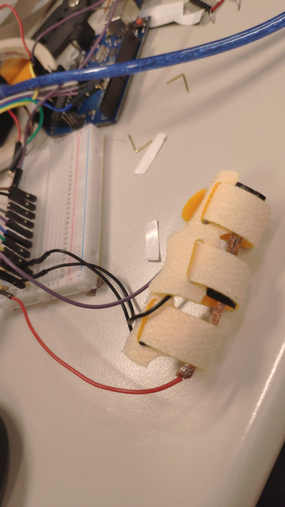
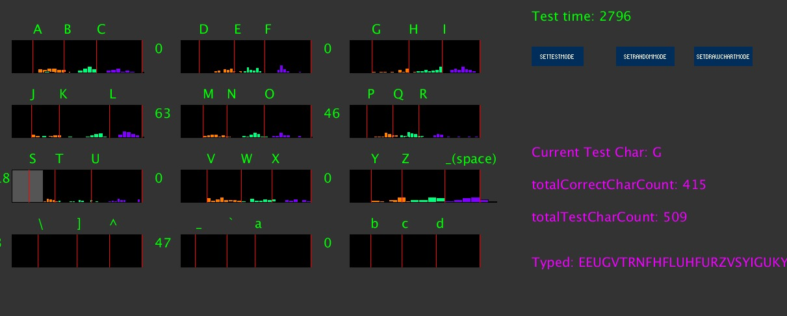

Yang Liang (Leon)
Doctorial Researcher
Academy of Interdisciplinary Studies
HKUST
Curriculum Vitae (PDF)
Last Updated: March 1, 2025
Contact: lyangbl<at>connect.ust.hk
About
Leon YL is a doctorial researcher in the Academy of Interdisciplinary Studies at HKUST. He is advised by Prof. Pan HUI and Prof. Yan XU. He earned his B.Sc. in Electronic Information Engineering from the Electronic Information School and minor in Marketing Management from Economics and Management School, Wuhan University.
Leon's research focuses on constructing theoretical frameworks for the Metaverse, which is envisioned as the evolution of the Internet, with an emphasis on critical issues such as digital identity, interoperability, governance, and legal regulation. As an emerging immersive and interactive digital ecosystem, the Metaverse currently lacks a universally accepted definition and a solid theoretical foundation, highlighting the need for systematic, interdisciplinary research and the development of a shared theoretical consensus.
He is dedicated to advancing foundational research in the Metaverse by exploring key challenges, including identity management, interoperability standards, security, privacy, and ethical considerations. His work aims to provide a robust theoretical foundation and evidence-based policy recommendations to support the sustainable development of next-generation digital ecosystems.

His doctoral research focuses on developing an avatar-centric theoretical framework to advance Metaverse governance. His work addresses foundational issues such as identity construction and protection, user interoperability frameworks and development, and the legal implications of virtual indecency within next-generation immersive digital ecosystems. He employs multidisciplinary methodologies, integrating theoretical perspectives from information technology, social sciences, and law, alongside extensive practical experience.
Before transitioning to academia, he began his professional career at HUAWEI, where he was responsible for managing regional service operations valued at ten million dollars, including network construction and operation services, maintenance, training, and consulting services. He then spent two years working in and contributing to the startup incubation sector, followed by his involvement in a collaboration between China Merchants Group and EON Reality. In this role, he led the establishment and operations of China’s first Interactive Digital Center and AVR Innovation Academy. Since 2014, he has also served as an external consultant for MDPI AG, a Switzerland-based academic publishing group. These professional experiences have equipped him with substantial practical expertise, cross-border collaboration skills, and a global perspective.
Academic Publications
[c.4]
Framing metaverse identity: A multidimensional framework for governing digital selves.
Liang Yang, Yan Xu, Pan Hui
Telecommunications Policy（In Press)
The study develops a multidimensional framework for "Metaverse Identity," defining it as a user's
digital self, encompassing personal attributes, data footprints, social roles, and economic elements.
It introduces two guiding principles: "Equivalence and Alignment" and "Fusion and Expansiveness."
The first ensures alignment between Metaverse and real-world identities in norms and standards, protecting rights
and establishing conduct codes. The second emphasizes the transformative evolution of Metaverse Identity,
enabling it to transcend real-world limitations, address diverse needs, and promote inclusivity.
Together, these principles balance ethical integration with dynamic co-evolution.
[c.3]
Interoperability of the Metaverse: A Digital Ecosystem Perspective Review.
Liang Yang, Shi-Ting Ni, Yuyang Wang, Ao Yu, Jyh-An Lee and Pan Hui
IEEE Engineering Management Review.(Under Minor Revision Review)
This study employs a systematic literature review to analyze the interoperability challenges within
the Metaverse digital ecosystem. Following Urs Gasser's digital ecosystem interoperability framework, it examines four key dimensions
—technological, data, human, and institutional—structured across three layers: infrastructures, platforms,
and virtual-physical integration. By constructing this multidimensional research framework, the study
provides a comprehensive overview of Metaverse interoperability, offering insights to guide future exploration
and address the complexities of this emerging field.
[c.2]
Legal Implications of Self-presence in the Metaverse.
Jyh-An Lee*, Liang Yang*, Pan Hui (*Co-first Author)
Media & Arts Law Review, Volume 25, Issue 4.
The study examines user self-presence in the context of recent virtual sexual assault incidents
in the Metaverse. It traces the technological and social evolution from the traditional Internet to
Massively Multiplayer Online Games (MMOGs) and the Metaverse, offering a theoretical framework for
qualitative analysis. Drawing on the New Chicago School model by Harvard Professor Lawrence Lessig
(Code is Law), the research explores regulatory mechanisms of self-presence across four dimensions:
technology, norms, market, and law. This framework advances the understanding and governance
of digital identities and self-presence in the Metaverse, with significant academic and practical contributions.
[c.1]
Human-Avatar Interaction in Metaverse: Framework for Full-body Interaction
Kit-Yung LAM, Yang Liang, Ahmad Alhilal, Lik-Hang LEE, Gareth Tyson and Pan HUI
ACM Multimedia Asia 2022(MM Asia 2022). Tokyo, Japan.
This paper presents a framework for full-body human-avatar interaction in the Metaverse, enabling real-time,
accurate motion capture and rendering for shared virtual environments. Using a lightweight Octree data structure,
the framework ensures high accuracy with minimal computational and network overheads, making it scalable for large-scale use.
Academic Activities and Awards
Teaching Experience
Responsibilities:
Responsibilities:
Responsibilities:
Work in progress
Pressure-Sensitive Force-Touch keyboard:
Arduino connecting the A pressure sensor array, use the force touch date of each sensor as keyboard press event.
 Design details (5 layers design) :
Velcro (loop)
Conductive fibric
+ conductive wire connect to +5V power supply in arduino
Velostat Pressure-Sensitive Conductive Sheet
- conductive wire connect to signal pin in Arduino
Conductive fibric
Velcro (Hook)